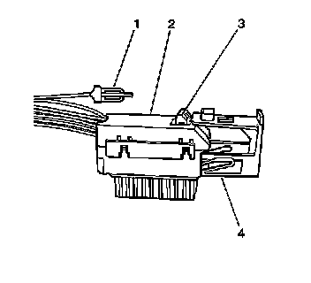
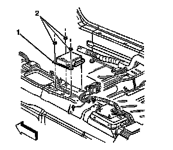

Air Bag Control Module: Service and Repair
Inflatable Restraint Sensing and Diagnostic Module Replacement
Removal Procedure
Caution: Do not strike or jolt the inflatable restraint sensing and diagnostic module (SDM). Before applying power to the SDM, make sure that it is securely fastened with the arrow facing toward the front of the vehicle. Failure to observe the correct installation procedure could cause SIR deployment, personal injury, or unnecessary SIR system repairs.
Caution: Refer to SIR Caution (SIR Caution) .
1. Disable the SIR system. Refer to SIR Disabling and Enabling (Service and Repair) .
2. Remove the center console. Refer to Front Floor Console Replacement (Left Hand Drive) (Service and Repair)Front Floor Console Replacement (Right Hand Drive) (Service and Repair) .

3. Remove the connector position assurance (CPA) (1) from the wiring harness connector (2) to the inflatable restraint sensing and diagnostic module (SDM).
4. Push the flex lock button (3) down and move the sliding connector locking cover (4) to the OPEN position.
Important: The SDM is shown with the carpet removed for illustration purposes only. Removal of the front carpet or the front seats is not necessary to service the SDM.

5. Disconnect the wiring harness connector from the SDM (1).
6. Remove the SDM mounting fasteners (2).
7. Remove the SDM from the console floor.
Installation Procedure
1. Remove any dirt, grease, or other impurities from the mounting surface.
2. Install the SDM (1) horizontally to the console floor.
3. Point the arrow on the SDM toward the front of the vehicle.
Notice: Refer to Fastener Notice .
4. Install the SDM mounting fasteners (2).
Tighten fasteners to 9 N.m (80 lb in).
5. Connect the wiring harness connector (1) to the SDM.
6. Push the flex lock button (3) down and move the sliding connector locking cover (4) to the CLOSE position.
7. Install the CPA (1) to the wiring harness connector (2) to the inflatable restraint SDM.
8. Install the console. Refer to Front Floor Console Replacement (Left Hand Drive) (Service and Repair)Front Floor Console Replacement (Right Hand Drive) (Service and Repair) .
9. Install the driver and the passenger seats to the original position.
10. Enable the SIR system. Refer to SIR Disabling and Enabling (Service and Repair) .
Important: The AIR BAG indicator may remain ON after the SDM has been replaced. DTC B1001 may set requiring the SDM part number to be set in multiple modules. If the indicator remains ON after enabling the SIR system, perform the diagnostic system check and follow the steps thoroughly to ensure that the SDM is set properly.
11. Program the new SDM into the dash integration module. Refer to Body Control Module Programming and Setup (Programming and Relearning) .